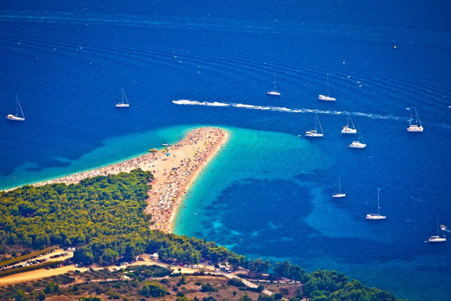
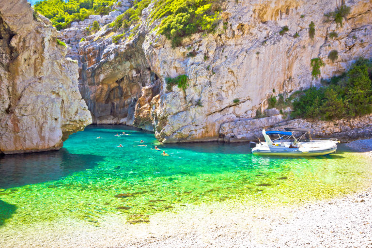
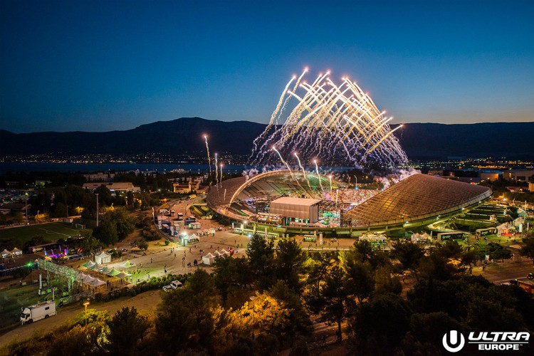

FAQ
About our courses
We run our courses approximately once in 2-3 months, so be sure to apply in advance.
Our groups consist of 5-10 people on average. Most courses are held offline or online + offline. If you have any questions, please read this section or contact us directly.
Who are these courses for?
We have different courses designed for beginners and professionals. It all depends on your skills and needs.
Our pricing plans
11 reasons wy you need to visit to croatia
Sprawling beaches, picturesque towns and stunning scenery – Croatia has all the ingredients you need for the ultimate summer holiday, proving popular among honeymooners, families and large groups alike. Have you ever found yourself wondering what all the fuss is about? To help you understand this sun-drenched country’s enduring appeal, we’ve put together a list of the top reasons why you need to visit Croatia – and some of them may surprise you!
1. It’s easy to reach
Hvar, Split, Dubrovnik and Pula are all just two and a half hours away (or less!), which makes getting there with young ones as fuss-free as possible. But even if you’re jetting off with a group of friends, Croatia still trumps trips to the Canaries or Greek Islands when it comes to travel time, meaning you can all hit the beach that much faster.
2. Knock-out beaches
Croatia is famed for its scenic pebbled beaches, which are beautifully lapped by crystal-clear waters. One of the most well known is Brac‘s Zlatni Rat, also referred to as the Golden Cape. The tip of the beach is everchanging with the wind, meaning you never know quite what shape it’ll take when you visit. This location is a protected area as well as a tourist magnet, attracting visitors from all around the world.
Zlatni Rat Beach, Bol, Croatia
If you’d prefer to escape the crowds, you can easily rent a boat from Hvar to enjoy Stiniva Beach. This hidden gem is literally concealed by two towering cliffs. Once you’ve sailed inside, you’ll feel like you’ve truly entered an earthly paradise, with crowd levels being minimal due to its location on the farthest inhabited island in Dalmatia.
Stiniva Bay, Vis Island, Croatia
3. The Game of Thrones appeal
Fans of the show will need no convincing! You can visit some of the series’ top locations with the Game of Thrones tour, recreating pictures of your favourite scenes. Among the attractions to have been featured are Dubrovnik’s city walls, which became King’s Landing; The Fortress of Kliss, which is the City of Meereen; and Trsteno Arboretum, which became the Garden of Red Keep. All that’s left to do is find a dragon…
4. Festivals galore!
Croatia has quickly become a firm favourite with festival goers, hosting an array of world-class musicians. Ultra Europe, Sonus and Fresh Island Festival are just a mere taste of the summer’s biggest draws. Most take place on the beach or somewhere secluded, so get ready to dance until you drop.
Credit: Ultra Europe, Croatia
5. Destination Dubrovnik
Utterly enchanting, this ‘Pearl of the Adriatic’ has to be experienced at least once in your life. The best way to see Dubrovnik is to get on top of the city’s walls, stretching around the Old Town at a distance totalling 1.2 miles. That vantage point allows you to see the damage of the war up close, all the while admiring the city’s ethereal beauty. So, even with the crowds, this is simply a must-visit.

6. The seafood
Plucked straight out of the Adriatic Sea, the seafood served across Croatia will be some of the freshest you’ve ever tasted. Whetheryou prefer your oysters and octopus to be served as part of a stew or risotto, the flavours will be simply unmatched.

Traditional Croatian roast of octopus with potatoes onions garlic tomato and spices.
...read more


READ MORE:
Dubrovnik Travel Guide: Southern CroatiaThe Best Places For Traditional Food In Dubrovnik
11 Unusual Things To Do In Dubrovnik
The 7 Best Beaches In Dubrovnik
Dalmatian Coast Travel Guide